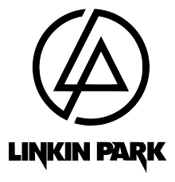

Linkin Park is mijn favoriete band, ze spelen jammer genoeg niet meer na het overlijden van de lead singer Chester Bunningham, maar de muziek blijft geweldig om naar te luisteren.
Voor meer informatie, click hier,
The Social Network is een film over het ontstaan van Facebook. Het mooie aan deze film is dat je
kan zien hoe er bepaalde stappen zijn gemaakt, maar ook de controversie rond het eigendom.
Het
verhaal speelt zich in verschillende tijden zich af waardoor je een goed overzicht hebt van het gehele verhaal.
Voor meer informatie, click hier,
Om terug te gaan naar de hoofd pagina, click hier